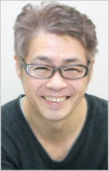
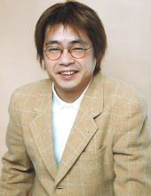
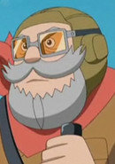

|  |
Hiroshi Naka or Hiroshi Nakamura is a Japanese actor affiliated with Production Baobab. One of his major role was Monkey D. Garp of One Piece.
|
 |
|---|
|  | Jonathon |
|
Jonathan is android created by Rex's father to help protect him. He shows fiercely loyal and proctective to Rex and his parents. |